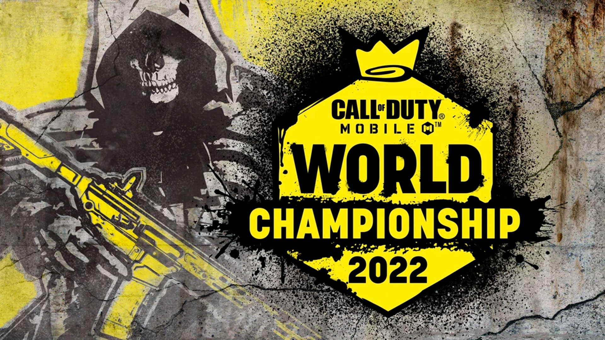

Campeonato Mundial
El Campeonato de Call of Duty es un torneo anual de Call of Duty que se lleva a cabo al final de cada temporada competitiva para determinar el Campeón Mundial del año. Para determinar la calificación, los equipos deben calificar a través de eventos antes del Campeonato Mundial.
